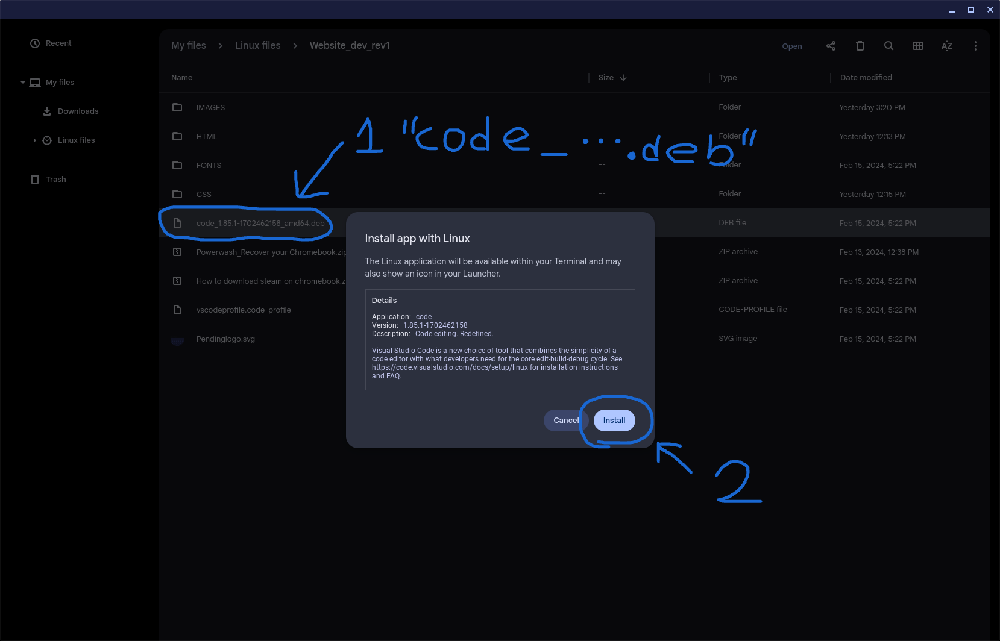
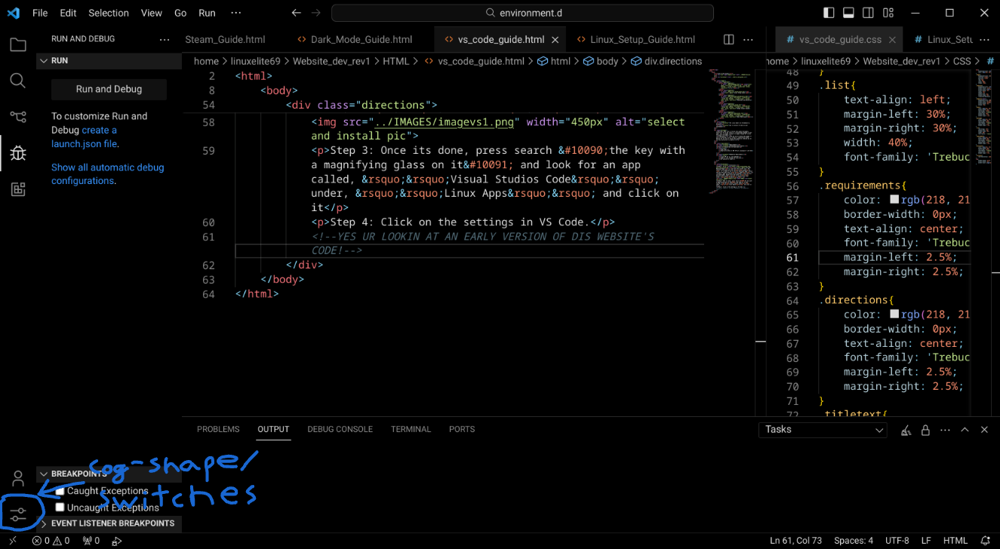

This guide will help you install Visual Studios on your Chromebook. Visual Studios is a popular IDE, and it is available for Linux. VS Code is stable and works perfectly on most Chromebooks. You can use VS Code to code in a large variety of languages.
Warning: Make sure to follow this guide thoroughly, failure to do so may result in irrecoverable damage to your data. This is highly unlikely to happen though but follow the guide thoroughly.
Warning 2: Do not use or follow this guide if you are planning to use a school or organization owned device! Do not use or follow this guide on a device you do not have permission to modify!
Press Ctrl+Search+Esc to find this:
Step 1: Go to VS Code Download Page and save the install file. The install file should end with, ’’.deb’’. If it doesn't, go to the all downloads page a select the one that ends with, ’’.deb’’.
Step 2: Open the Chrome OS file manager a find the file you downloaded. Right-click and select, ’’Install with Linux’’ or double-click then click, ’’Install’’.
Step 3: Once its done, press search ❪the key with a magnifying glass on it❫ and look for an app called, ’’Visual Studios Code’’ under, ’’Linux Apps’’ and click on it
Step 4: Click on the settings in VS Code, or press Ctrl +,
Step 5:
Step 6: If you see that the top of the VS Code window changes, you're finished. If not, right-click the terminal icon and select, ’’Shut down Linux’’. Then open the linux terminal again. After the find the VS Code app icon and click on it.
Step 7: If you’re developing websites download Chrome using Firefox from the Linux Setup Guide. Select the file that ends with, ".deb" and download it. Once its done, open the Chrome OS files app, find the file, and double-click it. Click install with Linux and can now run and debug html files.